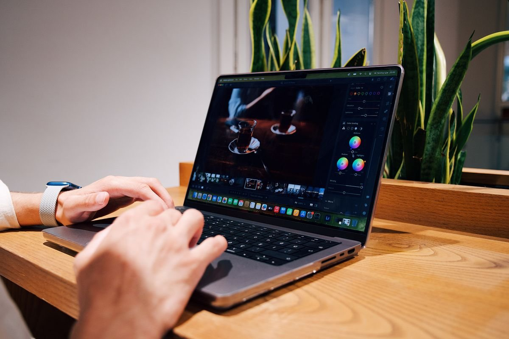
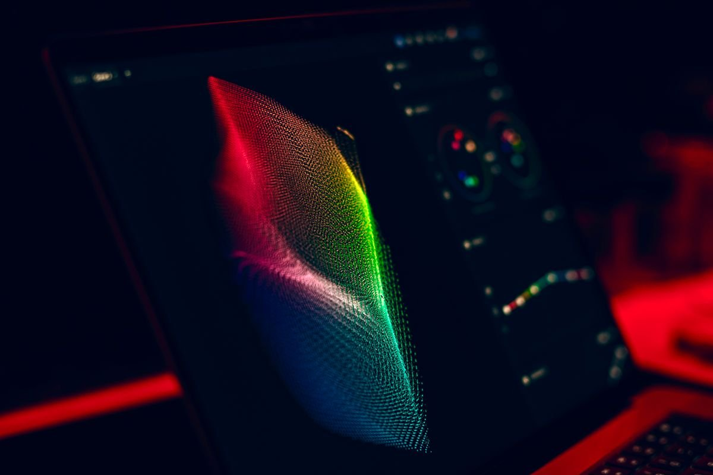
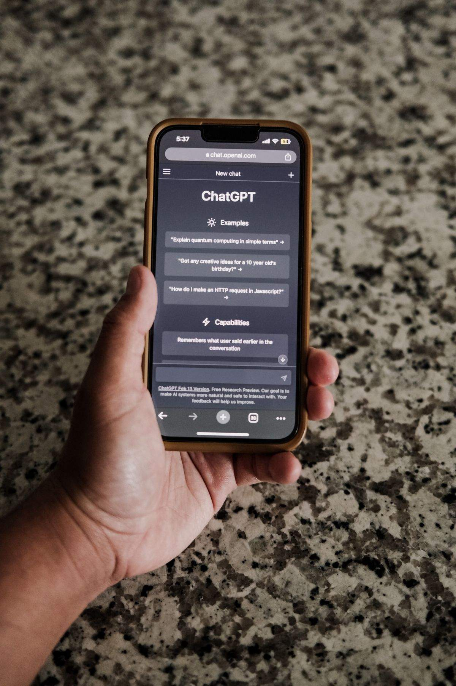

Kamu scroll media sosial, nemu gambar AI yang keren banget, lalu pengin bikin sendiri. Kamu buka Midjourney, eh ternyata harus bayar. Per November 2026, Midjourney memang tidak punya paket gratis sama sekali, dan paket termurahnya mulai 10 dolar AS per bulan. Buat yang cuma iseng atau baru belajar, harga segitu jelas bikin mikir dua kali. Untungnya ada jalan keluar yang resmi dan gratis: Bing Image Creator dari Microsoft. Kamu cukup punya akun Microsoft, tidak perlu kartu kredit, dan bisa langsung bikin gambar AI dari browser.
Kenapa Midjourney Jadi Tolok Ukur yang Mahal
Midjourney sering disebut sebagai standar kualitas gambar AI, dan reputasi itu memang beralasan. Hasilnya tajam, gayanya konsisten, dan komunitasnya besar. Masalahnya cuma satu: aksesnya berbayar penuh. Perbandingan Oktober 2026 oleh Pickshot mencatat Midjourney tidak menyediakan paket gratis di web, dan daftar harga resminya mulai 10 dolar AS per bulan untuk paket Basic. Direktori SuperAI yang dicek 27 Oktober 2026 mencatat hal yang sama.
Buat kreator profesional, harga itu mungkin masuk akal. Tapi buat pelajar, pemilik usaha kecil yang butuh visual konten, atau kamu yang sekadar penasaran, bayar tiap bulan hanya untuk coba-coba itu berat. Di titik inilah generator gambar AI gratis dari Microsoft jadi menarik.
Bing Image Creator, Pengganti Gratis dari Microsoft
Bing Image Creator adalah layanan bikin gambar dari teks milik Microsoft yang bisa dibuka langsung dari browser, tanpa install aplikasi. Perbandingan Oktober 2026 yang merujuk FAQ resmi Microsoft mencatat layanan ini sepenuhnya gratis dengan akun Microsoft personal. Kamu dapat 15 pembuatan cepat setiap hari, dan sesudah kuota cepat habis, pembuatan tetap jalan dengan kecepatan standar tanpa biaya tambahan.
Kualitasnya juga bukan kaleng-kaleng. ToolJunction menyebut Bing Image Creator memberi akses gratis ke kualitas DALL-E 3 dan GPT-4o, dua model gambar andalan yang biasanya berbayar. ToolRadar yang mengecek langsung pada September 2026 menambahkan bahwa layanan ini tidak pernah meminta kartu kredit atau memaksa naik ke paket berbayar.
Satu hal yang perlu dicatat soal lisensi: FAQ resmi Microsoft tidak membahas penggunaan komersial, dan ketentuan Microsoft Designer menjelaskan layanan ini untuk penggunaan pribadi. Jadi kalau gambarmu mau dipakai untuk bisnis, baca dulu ketentuannya sebelum memutuskan.
Cara pakainya gampang, lima langkah ini cukup:
- Buka halaman Image Creator di browser, lewat Bing atau Microsoft Designer.
- Masuk dengan akun Microsoft. Belum punya? Daftarnya gratis.
- Tulis prompt gambarmu. Bisa pakai Bahasa Indonesia, karena FAQ resmi menyebut prompt didukung lebih dari 100 bahasa dan diterjemahkan otomatis.
- Atur gaya atau ukuran kalau opsinya tersedia, lalu klik buat dan tunggu beberapa detik.
- Unduh gambar yang kamu suka, atau buat ulang dengan prompt yang diperbaiki.

Empat Alternatif Gratis Lain yang Layak Dicoba
Bing Image Creator bukan satu-satunya jalan gratis. Tergantung kebutuhanmu, empat layanan ini juga patut dicoba, semuanya punya tingkat gratis yang nyata per akhir 2026.
Google Gemini bisa bikin gambar lewat fitur Nano Banana 2 tanpa paket berbayar, menurut perbandingan Oktober 2026. Enaknya, kamu bisa revisi gambar lewat obrolan, misalnya minta ubah warna latar tanpa menulis prompt dari nol.
Leonardo.ai memberi 150 token gratis setiap hari, menurut ToolJunction. Ini cocok buat kamu yang mau utak-atik gaya visual lebih dalam, misalnya buat konsep karakter game atau ilustrasi fantasi. Perlu tahu saja, gambar dari paket gratis di Leonardo bersifat publik, jadi kurang cocok untuk draf yang masih rahasia.
Ideogram punya paket gratis dan dinilai paling jago kalau gambarmu butuh teks yang terbaca jelas, seperti poster atau logo sederhana. Kebanyakan generator AI masih belepotan kalau disuruh menulis kata di dalam gambar. Sama seperti Leonardo, gambar gratis di Ideogram bersifat publik, dan penggunaan komersialnya ada di paket berbayar.
Adobe Firefly menyediakan tingkat gratis dengan kuota harian yang reset tiap hari, menurut ToolRadar. Cocok buat pemakaian santai, bukan produksi massal. Microsoft Designer sendiri juga gratis dengan akun Microsoft personal dan memberi kredit AI bulanan, menurut direktori SuperAI yang dicek 27 Oktober 2026.

Tips Prompt Biar Hasilnya Tidak Mengecewakan
Generator gratis tetap butuh prompt yang jelas. Rumus sederhananya: subjek, gaya, suasana, detail. Contohnya, "kucing oranye tidur di sofa, gaya lukisan cat air, suasana hangat sore hari" akan memberi hasil jauh lebih bagus daripada sekadar "kucing".
Bahasa Indonesia bisa dipakai karena diterjemahkan otomatis, tapi kalau hasilnya meleset, coba tulis ulang prompt dalam Bahasa Inggris yang sederhana. Kalau masih jelek, ubah satu kata saja lalu buat ulang, jangan rombak semuanya sekaligus supaya kamu tahu bagian mana yang berpengaruh.
Satu hal yang perlu diingat: setiap layanan punya kebijakan konten. Jangan meminta gambar orang asli tanpa izin atau konten yang melanggar aturan. Selama idemu orisinal dan sopan, kamu bebas berkreasi sepuasnya tanpa keluar uang sepeser pun.

Penutup
Intinya, tidak bisa bayar Midjourney bukan akhir dunia. Per November 2026, Bing Image Creator memberi jalan gratis yang resmi, mudah, dan kualitasnya serius. Mulai dari satu prompt hari ini, siapa tahu gambar AI buatanmu yang berikutnya malah dipakai buat konten usahamu sendiri.
Sumber dan Info Resmi
Fakta dan detail di artikel ini merujuk ke sumber berikut, yang sudah dicek silang isinya:
- Pickshot (pickshot.ai), perbandingan per Oktober 2026: Midjourney tidak menyediakan paket gratis di web, paket Basic mulai $10/bulan; Bing Image Creator gratis dengan akun Microsoft personal, 15 pembuatan cepat per hari lalu kecepatan standar, prompt didukung 100+ bahasa merujuk FAQ resmi Microsoft; pembuatan gambar lewat Nano Banana 2 di Gemini tersedia tanpa paket berbayar; FAQ Bing tidak membahas penggunaan komersial dan ketentuan Microsoft Designer menjelaskan layanan untuk penggunaan pribadi.
- ToolRadar (toolradar.com), panduan yang dicek September 2026: Bing Image Creator tidak pernah meminta kartu kredit atau paket berbayar; Adobe Firefly punya tingkat gratis dengan kuota harian yang reset tiap hari (Adobe tidak mempublikasikan angka pastinya); Leonardo.ai memberi 150 token gratis per hari yang reset harian; Ideogram paling kuat untuk teks di dalam gambar dengan penggunaan komersial di paket berbayar.
- ToolJunction (tooljunction.io): Bing Image Creator memberi akses gratis ke kualitas DALL-E 3 dan GPT-4o; Leonardo.ai memberi 150 token gratis per hari; Ideogram punya tingkat gratis yang unggul dalam merender teks.
- SuperAI (superai.com.my), direktori yang dicek 27 Oktober 2026: Midjourney Basic $10/bulan; Microsoft Designer gratis dengan akun Microsoft personal dan memberi kredit AI bulanan.